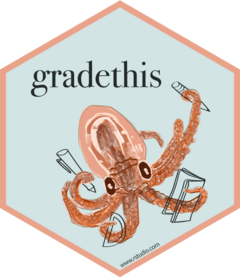

| gradethis-package {gradethis} | R Documentation |

Pairing with the 'learnr' R package, 'gradethis' provides multiple methods to grade 'learnr' exercises. To learn more about 'learnr' tutorials, please visit <https://rstudio.github.io/learnr/>.
Maintainer: Garrick Aden-Buie garrick@rstudio.com (ORCID)
Authors:
Daniel Chen daniel.chen@rstudio.com (ORCID)
Garrett Grolemund garrett@rstudio.com (ORCID) [conceptor]
Barret Schloerke barret@rstudio.com (ORCID)
Other contributors:
RStudio, PBC [copyright holder, funder]
Useful links:
Report bugs at https://github.com/rstudio/gradethis/issues